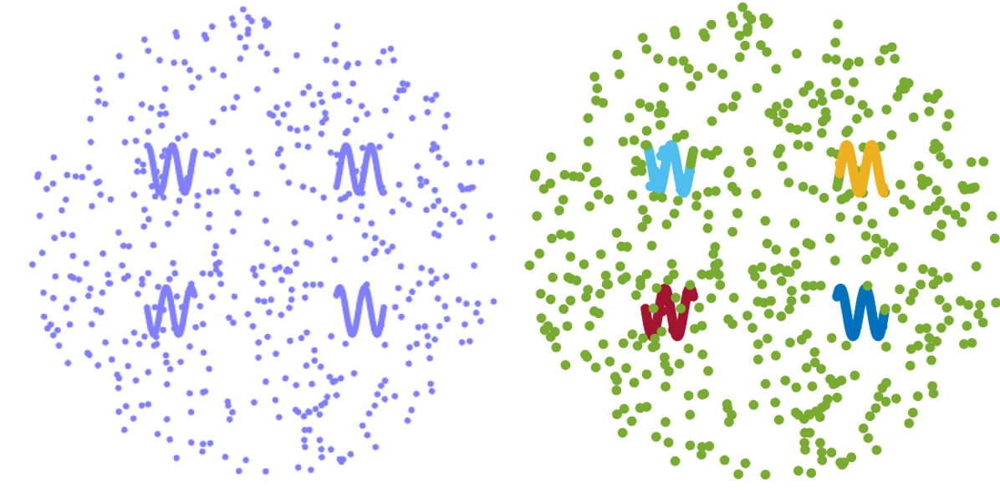
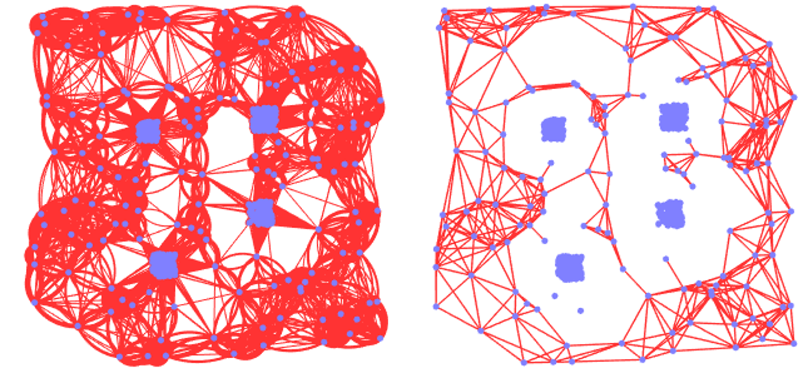
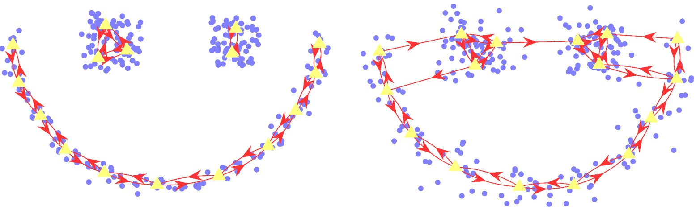
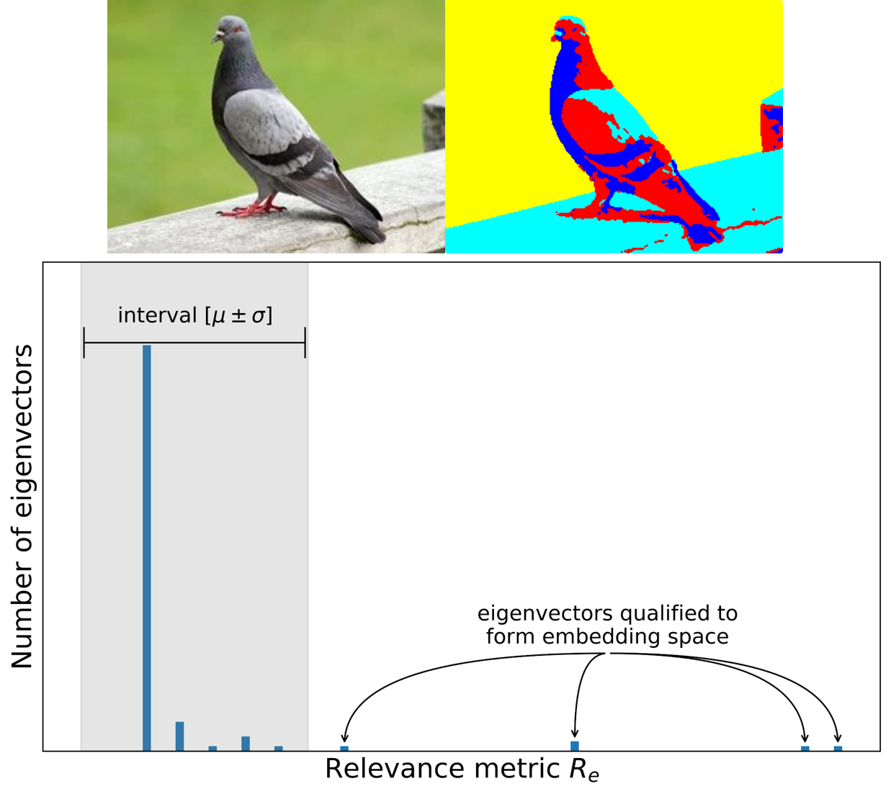
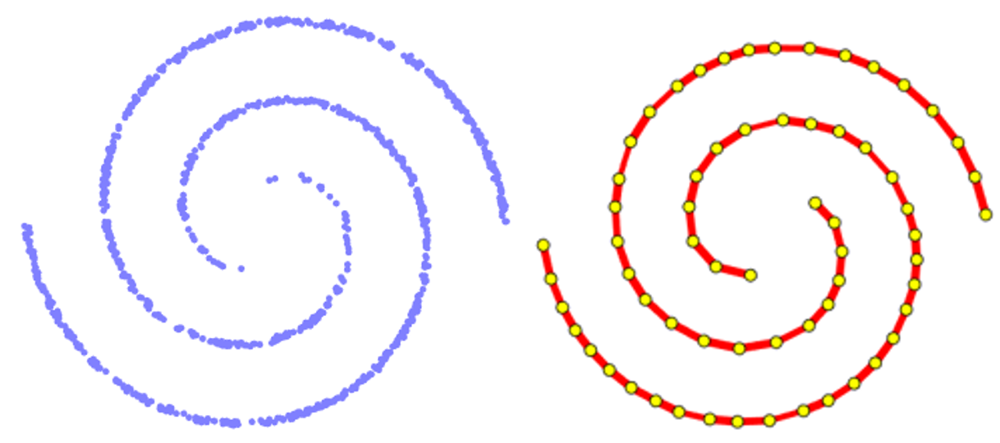

A parameter-free graph reduction for efficient spectral clustering
Reducing the graph edges without manually tuned parameters to run spectral clustering efficiently.
M. Alshammari, J. Stavrakakis, and M. Takatsuka, “A parameter-free graph reduction for spectral clustering and SpectralNet” submitted to IEEE Transactions on Knowledge and Data Engineering in November 2020.

Refining a k-nearest neighbor graph for a computationally efficient spectral clustering
The k-nearest neighbor graph restricts all vertices to have the same number of edges, which could affect the quality of clustering. We developed a refined graph where unnecessary edges are removed.
M. Alshammari, J. Stavrakakis, and M. Takatsuka, “Refining a k-nearest neighbor graph for a computationally efficient spectral clustering,” Pattern Recognition, Volume 114, 2021, 107869, ISSN 0031-3203.

Approximate spectral clustering density-based similarity for noisy datasets
Approximation graphs are usually sensitive to noise. We introduced a graph filtering scheme to remove edges from noisy points.
M. Alshammari and M. Takatsuka, “Approximate spectral clustering density-based similarity for noisy datasets,” Pattern Recognition Letters, vol. 128, pp. 155-161, 2019.

Approximate spectral clustering with eigenvector selection and self-tuned k
Spectral clustering requires two parameters to be tuned. The number of eigenvectors for the embedding space k, and the number of clusters in the embedding space. We introduced a method to automatically estimate these two parameters.
M. Alshammari and M. Takatsuka, “Approximate spectral clustering with eigenvector selection and self-tuned k,” Pattern Recognition Letters, vol. 122, pp. 31-37, 2019.

Approximate Spectral Clustering using Topology Preserving Methods and Local Scaling
Using the topology preserving methods for approximate spectral clustering provides competitive performance with better memory footprint.
M. Alshammari and M. Takatsuka, “Approximate Spectral Clustering using Topology Preserving Methods and Local Scaling,” The 25th International Conference on Neural Information Processing (ICONIP 2018), 2018.
El-Alfy, E. S. M., Alshammari, M., “Towards scalable rough set based attribute subset selection for intrusion detection using parallel genetic algorithm in MapReduce,” Simulation Modelling Practice and Theory, 64, 18-29, 2016.
Baroudi, U., Bin-Yahya, M., Alshammari, M., Yaqoub, U., “Ticket-Based QoS Routing Optimization using Genetic Algorithm for WSN Applications in Smart Grid,” Journal of Ambient Intelligence and Humanized Computing, 1-14, 2018.
Alshammari, M., El-Alfy, E. S. M., “MapReduce implementation for minimum reduct using parallel genetic algorithm,” Information and Communication Systems (ICICS), 2015 6th International Conference on (pp. 13-18). IEEE, 2015.
Noor, F., Alhaisoni, M., Alshammari, M., Ramachandran, R. P., “Distinguishing medical drugs from a large set of side effects using a distributed genetic algorithm on a PC cluster,” Circuits and Systems (ISCAS), 2015 IEEE International Symposium on (pp. 790-793). IEEE, 2015.
Alshammari, M. Takatsuka, M, “Image Segmentation via Adaptive Smoothing Controlled by Orthogonal Projection,” Technical Report 978-1-74210-418-8, School of Computer Science, University of Sydney, 2017.
Alshammari, M. Takatsuka, M, “Image Segmentation via Self-Organizing Map Approximate and Spectral Clustering,” Technical Report 978-1-74210-420-1, School of Computer Science, University of Sydney, 2017.

 https://orcid.org/0000-0002-7864-0011
https://orcid.org/0000-0002-7864-0011